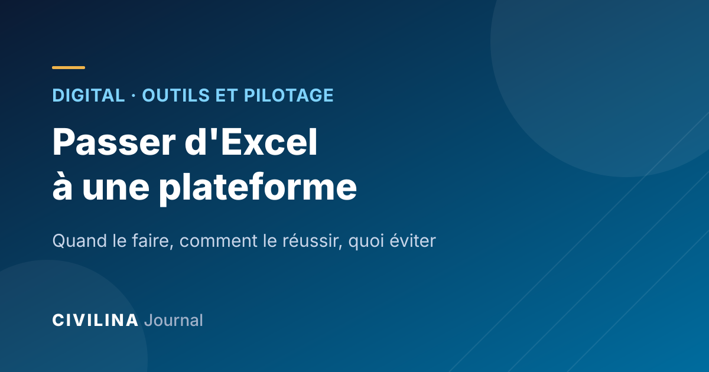
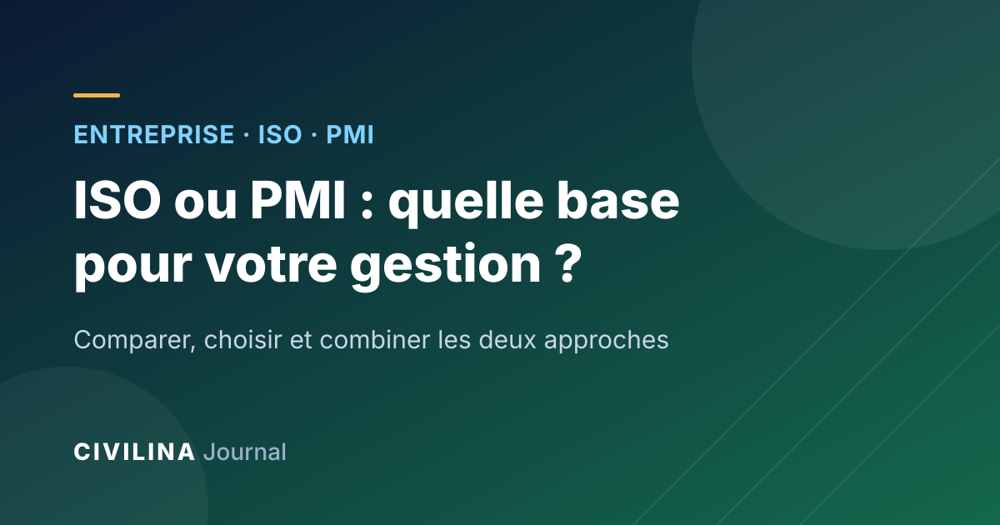
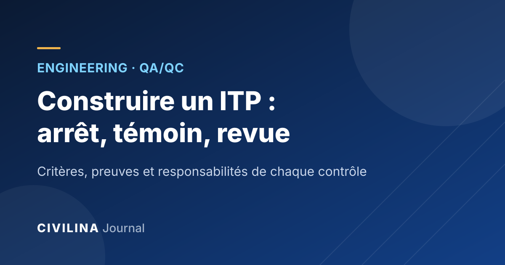
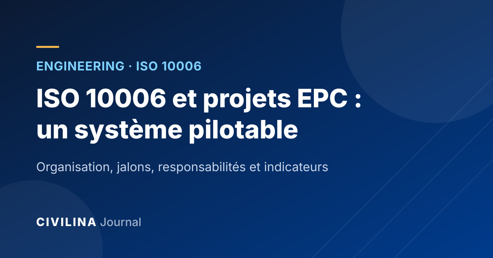
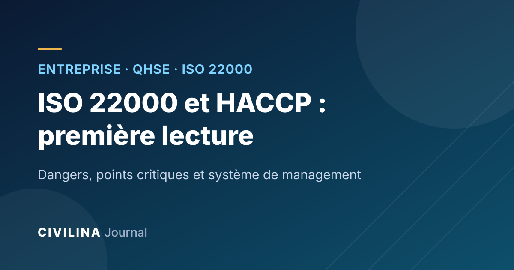

Accueil › Journal
Journal Civilina
Guides pratiques pour piloter vos projets, votre qualité et vos chantiers.
Des articles écrits à partir de l'expérience terrain : méthodes, modèles et points de vigilance, en gestion de projet, qualité, QA/QC, QHSE et digitalisation.

Passer d'Excel à une plateforme de gestion : quand et comment le faire
Les signaux qui ne trompent pas, les trois options possibles et une méthode par étapes pour réussir la bascule.

ISO ou PMI : quelle base pour structurer la gestion de son entreprise ?
Ce que chaque approche apporte, la différence entre certifier une organisation et une personne, et comment les combiner.

Rédiger un Plan d'Assurance Qualité (PAQ) selon l'ISO 10005
Définition, contenu type, étapes de rédaction et spécificités des bureaux d'études, avec une checklist avant envoi.

Construire un ITP : points d'arrêt, de témoin et de revue
Structure, types de points, critères d'acceptation et chaîne de preuve, avec un exemple commenté sur un voile en béton armé.

ISO 10006 et projets EPC : construire un système de management de projet pilotable
Organisation, documentation, jalons, responsabilités et indicateurs : ce que l'ISO 10006 apporte concrètement à un projet EPC.

ISO 9001 : structurer un système qualité utile, pas seulement documentaire
Processus, preuves, indicateurs et audits : comment faire de l'ISO 9001 un outil de pilotage plutôt qu'une pile de documents.

ISO 22000 et HACCP : première lecture d'un système de sécurité des aliments
Dangers, programmes prérequis, points critiques et système de management : les bases pour comprendre la démarche.
Ligne éditoriale
Trois rubriques, alignées sur nos trois axes.
Chaque article part d'une situation réelle de projet ou d'entreprise et se termine par des éléments directement utilisables : checklist, modèle ou points de vigilance.
Projet et QA/QC
Management de projet selon l'ISO 10006, plans qualité, ITP, inspections, PV, non-conformités, réception et DOE.
Qualité, QHSE et pilotage
ISO 9001, bonnes pratiques PMI, processus, RACI, indicateurs, tableaux de bord, sécurité des aliments et QHSE.
Outils et digitalisation
Passer d'Excel à une plateforme, suivi de chantier, traçabilité des décisions et bon usage de l'IA en ingénierie.